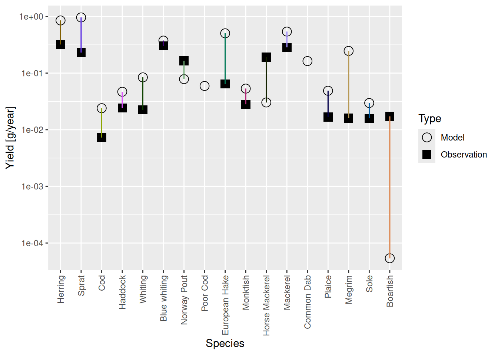

Match landings datas
We will now continue to refine our model by matching it to observed landings.
We load the model we created in the previous tutorial.
cel_model <- readParams("cel_model_refined.rds")Landings data
We will load data on the size distribution of catches. Such data is often collected in data-poor fisheries, so it will be useful to see how we can use such data for model calibration. This specific dataset was sourced from Scientific, Technical and Economic Committee for Fisheries (STECF) and was restricted to England and Wales.
For each species we have numbers of individuals observed in 1cm wide length bins (the dl column indicates the width of each bin). If you get an error message saying that the catch.csv file can not be found: you will find the code for downloading it in the earlier tutorial when estimating asymptotic sizes.
In addition to this information about the size distribution of the catches we have the total biomass of the annual commercial landings for each species, i.e., the fisheries yield. Like the spawning stock biomass estimates we used in the tutorial on finding first parameters, we obtained the values for the yield in tonnes per square kilometre (or, equivalently, grams per square metre) from the 2021 ICES stock assessment database by dividing the total yield of the assessed stock by the area of the assessment region in square kilometres and taking the geometric mean over the time period from 2012 to 2021. Here we just load them in from a file we prepared and store them in a yield_observed column in the species parameter dataframe of our model:
download.file("https://github.com/sizespectrum/mizerCourse/raw/main/build/celtic_yields.rds",
destfile = "celtic_yields.rds")gear_params(cel_model)$yield_observed <- readRDS("celtic_yields.rds")We can now use plotYieldVsSpecies() to make a plot that for each species compares the observed yield to the yield currently achieved in the steady state of our model.
plotYieldVsSpecies(cel_model)
We’ll have to do something about those yield values in the model. But first let’s have a look at the size distribution of the catches.
Exploring catch size distributions
The plotYieldVsSize() function lets us see how well our modelled and the observed catch size distributions agree. Let’s take a look at the case of cod:
plotYieldVsSize(cel_model, species = "Cod", catch = catch_lengths,
x_var = "Length")
We see that the red curve (model) and the blue curve (observations) match surprisingly well. This means that the selectivity parameters for cod are already chosen quite well in our model. However the match could be made even better by steepening the selectivity curve.
Let us look at the current gear parameter data frame:
# Let's look at our gear params first
gear_params(cel_model)We notice that the row names are made up of the species name and the gear name, separated by a comma. So we can change the selectivity parameters specifically for cod with
# Modify the l50 and l25 for cod
gear_params(cel_model)["Cod, Commercial", "l50"] <- 44
gear_params(cel_model)["Cod, Commercial", "l25"] <- 39.5
#check the match between model and observed catch size distributions
plotYieldVsSize(cel_model, species = "Cod", catch = catch_lengths,
x_var = "Length")
This looks better. We should have no scruples adjusting the gear selectivity parameters using our mizer model because they are hard to estimate outside a model.
Now that we have changed fishing selectivity we need to find a new steady state. It is important to run steady() frequently, while making small changes to the model parameters. If we accumulate too many changes, finding a new steady state might be harder.
cel_model <- steady(cel_model)You probably wondered how I knew what the right values for the l50 and l25 parameter were for cod. The answer is that I used trial and error with the help of the tuneParams(). We’ll do some more of that in the following video. We pass the catch length data into the tuneParams() function via the catch argument:
cel_model <- tuneParams(cel_model, catch = catch_lengths)Note how we assign the return value from the tuneParams() function back to the cel_model variable. That way we capture the changes that we make in the gadget.
The tuneParams() gadget has a lot of useful panels and allows you to play with the parameters interactively. But most of these plots are also available as separate plot functions in mizer or in mizerExperimental.
Exercise: Use tuneParams gadget to refine your model
In our video we only started refining the model by adjusting some parameters for a few species. We ask you to do something similar but for more species in order to refine the model you have built in the previous tutorial. Share your observations in the comment section below.
saveParams(cel_model, file = "cel_model_landings.rds")